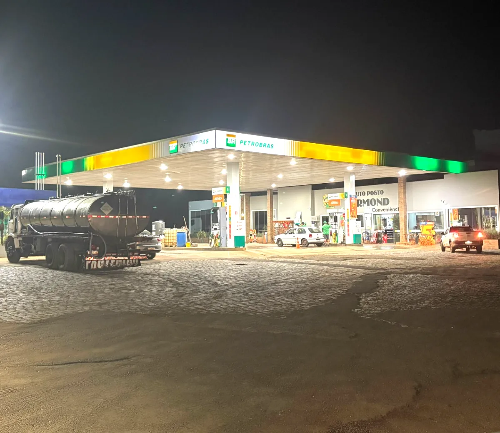
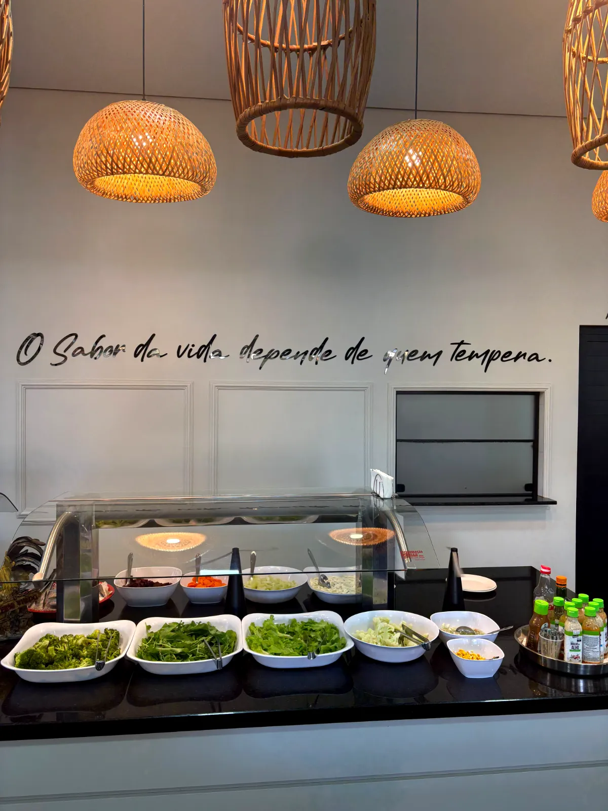
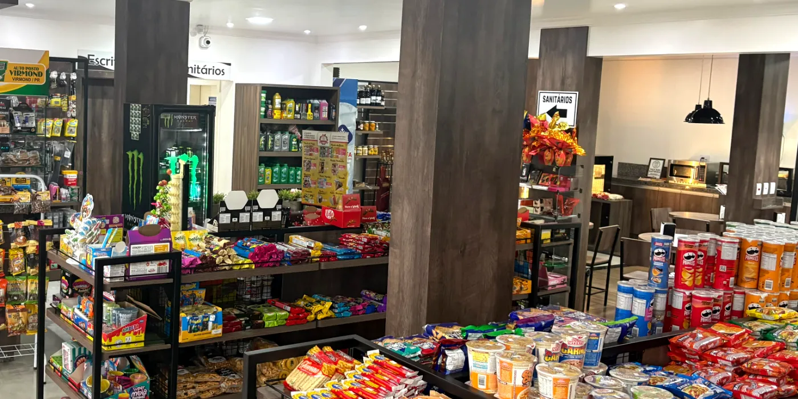
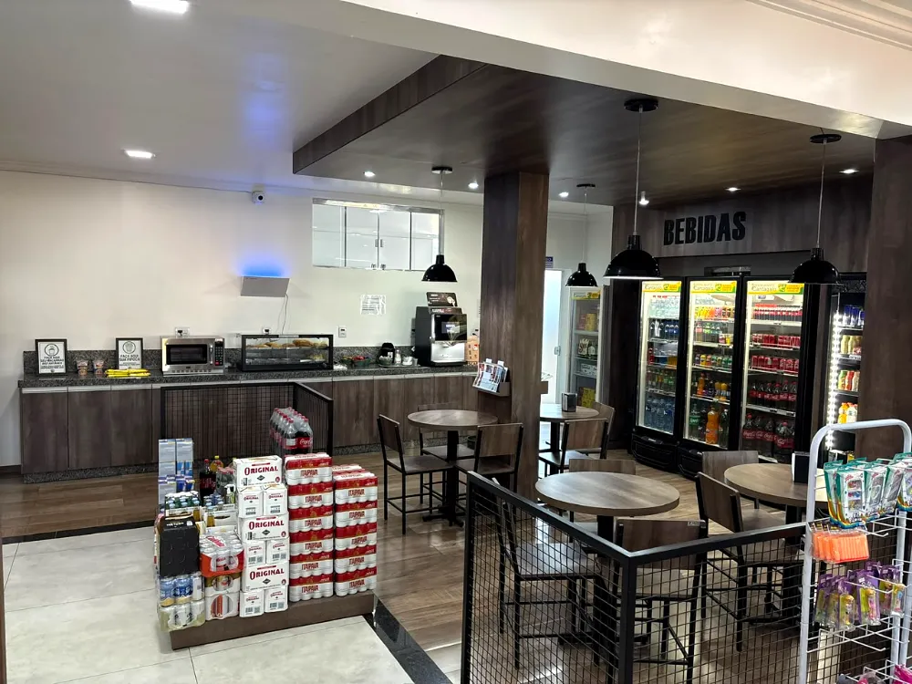
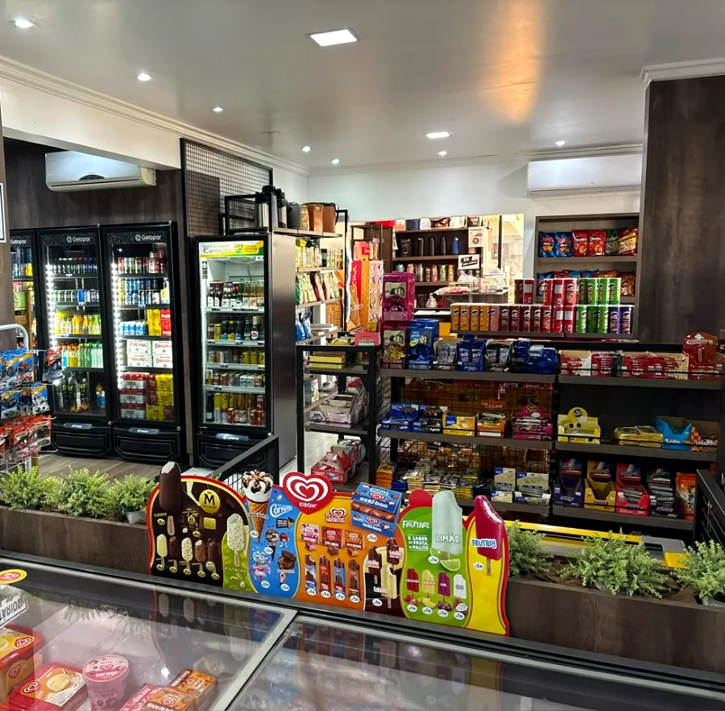
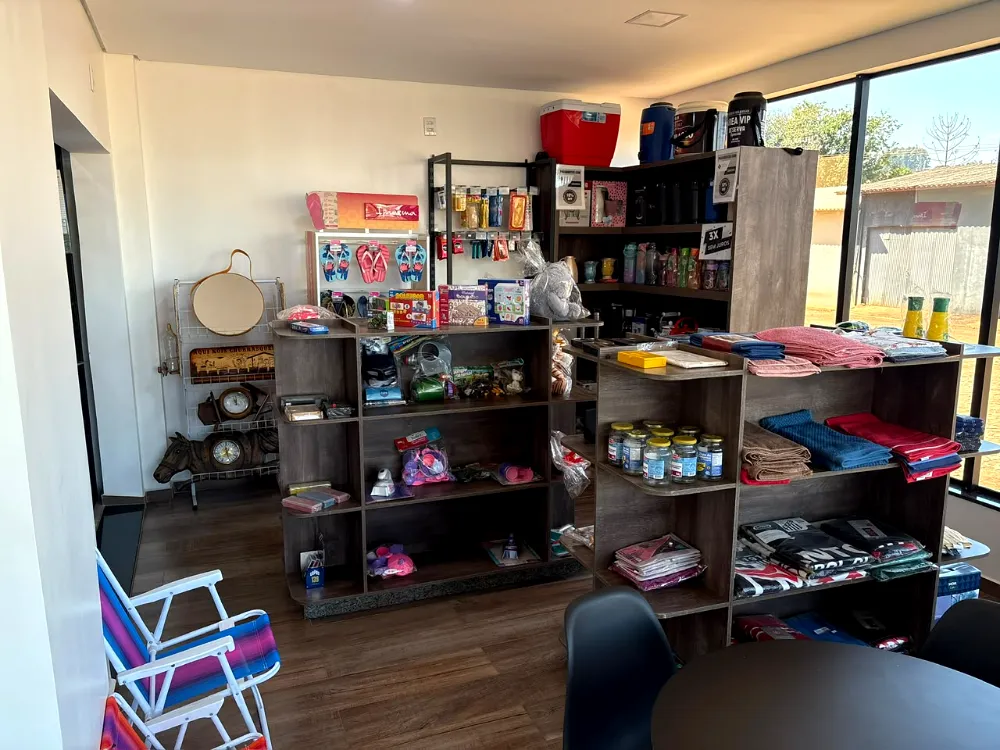
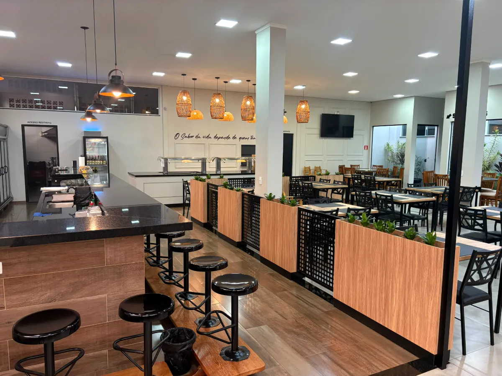
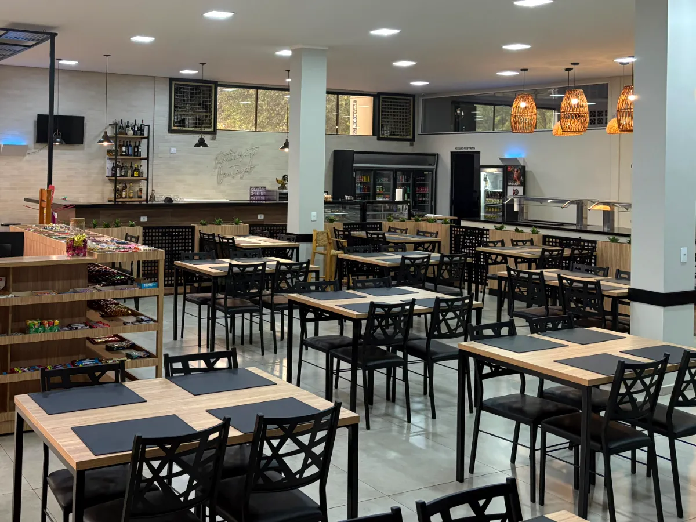
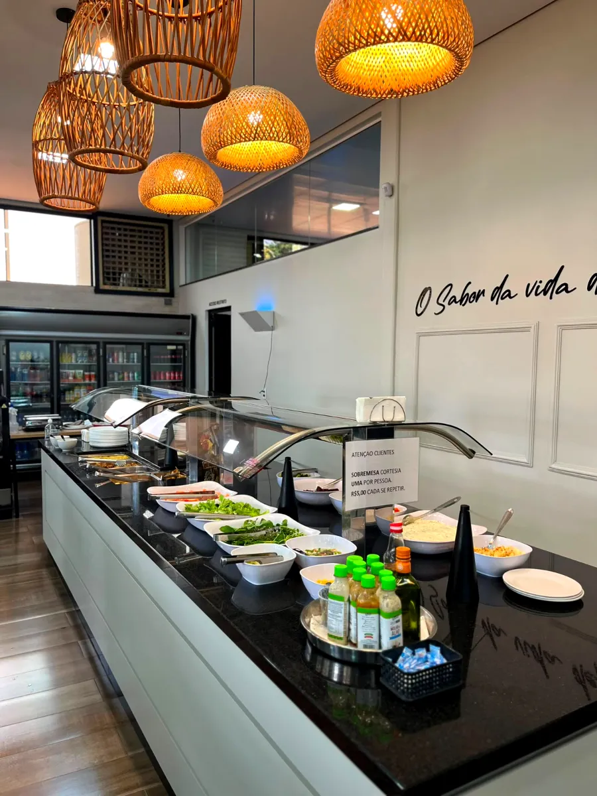

Auto Posto Virmond
Posto e conveniência
- Segunda a sexta
- 06:00 – 21:00
- Sábado
- 06:00 – 20:00
- Domingo
- 07:00 – 20:00
Um lugar para seguir bem: abastecimento, conveniência e o sabor de uma boa comida caseira no mesmo destino.
Na BR-277, o Auto Posto Virmond e o Restaurante Cantagalo se encontram para cuidar de cada parte da sua parada — do tanque cheio ao prato servido com carinho.


AUTO POSTO VIRMOND RESTAURANTE CANTAGALO
Combustível de qualidade Petrobras, conveniência completa e cuidados para o seu veículo. Uma parada pensada para você retomar a estrada com tranquilidade.







O sabor acolhedor da comida caseira em um restaurante anexo ao posto. Para quem mora na região ou está de passagem, o Cantagalo transforma o almoço em um bom motivo para parar.
Estamos na BR-277, em Virmond, no Paraná. Faça uma pausa, abasteça e descubra o Restaurante Cantagalo no mesmo local.
Horários podem variar em feriados.